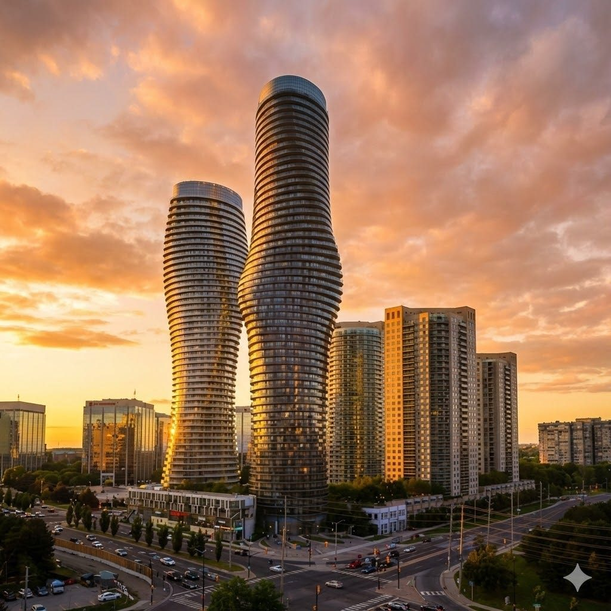
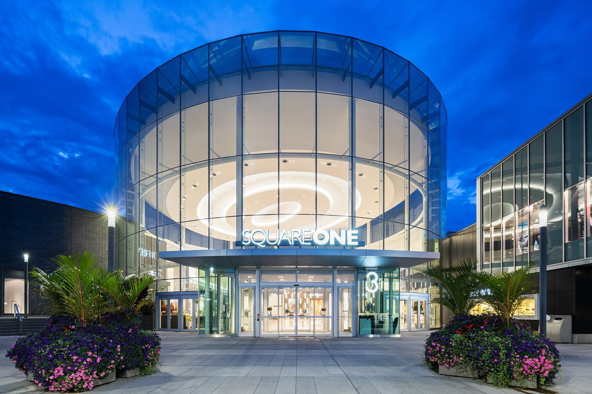

Walk through it
The soundscape is a mix of three recordings. Tap a window to hear one on its own.
My city, all day
Slide from golden hour to city lights.


Mississauga, Ontario
I'm from Mississauga, and Square One feels like home. Hit play and walk through it with your ears.
The soundscape is a mix of three recordings. Tap a window to hear one on its own.
Slide from golden hour to city lights.
